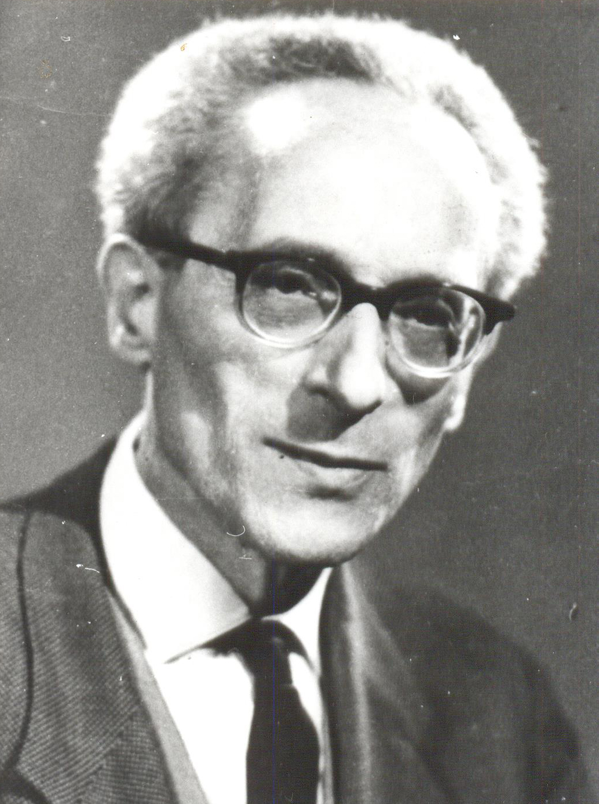

Magyar Dialogikus Iskola
Teizmus és ateizmus roppant erőinek kereszteződésében
Szabó Lajos
1902-1967

"A lelkiismeret a személy legszemélyesbb pontja, pillanata, örökkévalósága. [...] Minden alkotás legbensőbb indítása, az emberi lélek legősibb mozdulása (Fülep Lajos), ahol zene, líra és ima még nem váltak széjjel! A lelkiismeret így: teremtő vágy és lírai igény."
Tábor Béla
1907-1992
"A szellem a valóságnak az az egyetlen csodája, hogy a valóság van. Az él a szellemben, aki ezt a "van"-t, mint csodát, éspedig mint a valóság egyetlen csodáját éli át.Csoda az, amihez egy dimenzióval meg kell növekednünk ahhoz, hogy mérhetővé váljon a számunkra."
Vádirat a szellem ellen

Valakinek végre vállalkoznia kell a kényelmetlen feladatra, hogy lerántsa az ártatlanság leplét arról az egyetlen tényezőről, amely az érdekellentétekké atomizálódott világ bellum omnium contra omnes-ében eddig még intakt maradt: a szellemről. Nietzsche-félreértők és a misztikus érzékiség apostolai ne örüljenek: nem a világfolyamat átlogizálása elleni támadásról van szó, hanem az egész szellemi élet felelősségre vonásáról, olyan felelősségre vonásról tehát, amely alól hegeliánusok éppoly kevéssé vonhatják ki magukat, mint Klagesék.
Tisztában vagyunk vele, hogy amikor a szellemi élet leleplezésére vállalkozunk, osztályárulást követünk el. A "teremtő intelligencia", úgy látszik, nagyon jól érezte magát abban a pozícióban, amelyet a társadalom láthatatlan hierarchiájában elfoglalt. Ő volt az, aki vádolhatott, anélkül, hogy őt vádolhatnák, és ítélhetett, anélkül, hogy megítéltetett volna. Ezenkívül ő volt az örök titkos tartalék, a világ lelkiismeretének tartalékja; rendkívül sötét szerep, amelynek az a rendeltetése, hogy lehetővé tegye a világ mindenkori aktuális lelkiismeretének tetszés szerinti megterhelését, abban a megnyugtató tudatban, hogy tartalékban van még a szellem, amely ártatlan és megvált a bűnöktől.
Alapállás
A „Magyar Dialogikus Iskola” név túlzottan hivatalos hangzása ellenére valójában egy olyan szellemi közösséget takar, amely több mint ötven évig illegális körülmények között működött. Képviselői a szellem primátusát vallják, s ezért elutasítanak minden institucionalizmust. Tagjai sem a nemzeti szocialista, sem a bolsevik rezsimek idején nem publikálhattak. A közösség két középponti alakja Szabó Lajos és Tábor Béla. Szorosabban és kevésbé szorosan sokan tartoztak hozzá, az ő nevük az alábbi, részletesebb történeti bemutatásban szerepel.
A Magyar Dialogikus Iskola a szellem primátusát és ezen belül a szó primátusát vallja. A racionalizmust és irracionalizmust egyaránt az egységes szellem bomlástermékeiként fogja fel. A racionalizmust túl szűk keretnek ítéli a szellem valóságos problémáinak érdemi kutatásához. A latin „ratio” szó a görög „logosz” szó jelentésmezejének csak egy metszetét fedi le. Kimarad belőle az, amit latinra verbummal fordítottak: ez az élő beszéd, a személyes szó. A verbumot és ratiot egyaránt magában foglaló logosz az igazság kutatásának tere. Az igazság nem tárgyi, hanem személyes, dialogikus viszony. Ilyen értelemben a Budapesti Dialogikus Iskola logocentrikus, a demitologizáló korszellem nyelvi-gondolati közegében fogalmazza újra az örök alapkérdéseket. Azokat a kérdéseket, amelyeket a Biblia, Plótinosz, a spekulatív gnózis és misztika, a klasszikus német filozófia, Kierkegaard és a dialogikus gondolkodók, másrészt az avantgárd művészek vagy a matematikaelméleti kutatók vetettek fel.